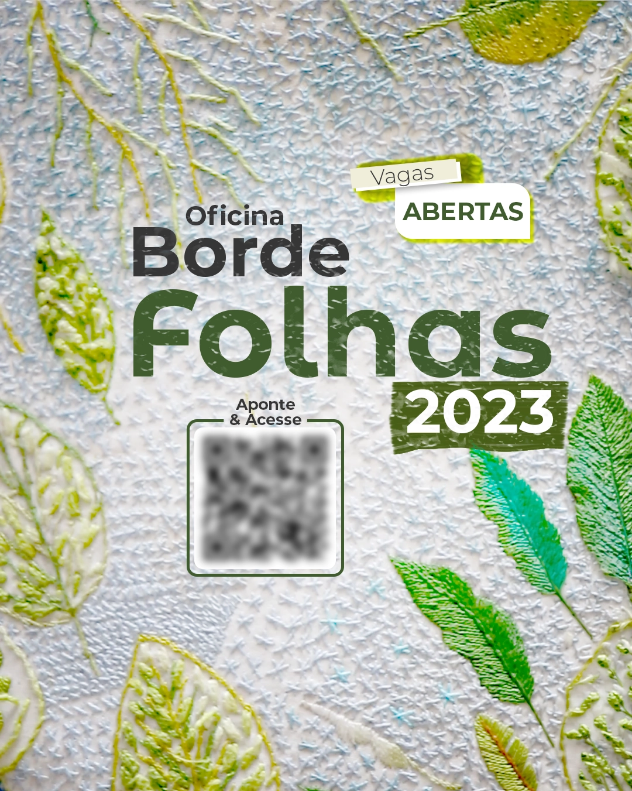
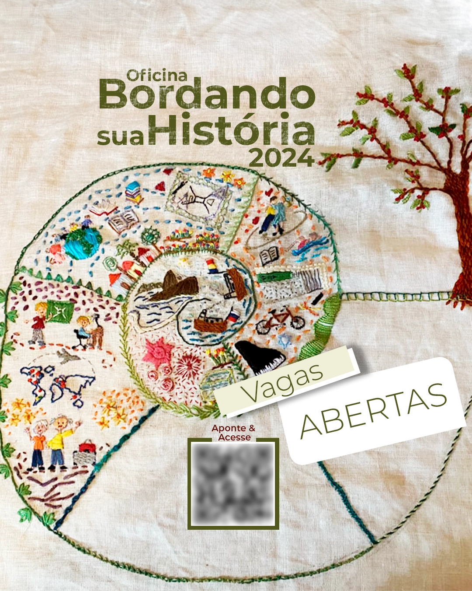
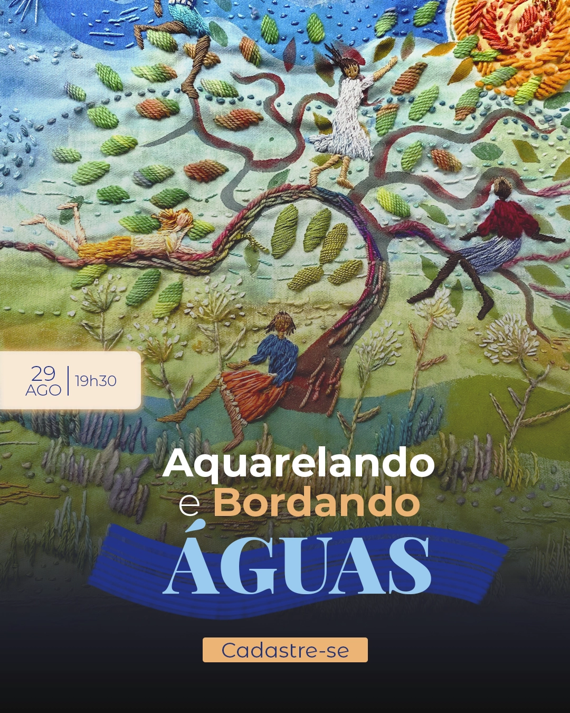
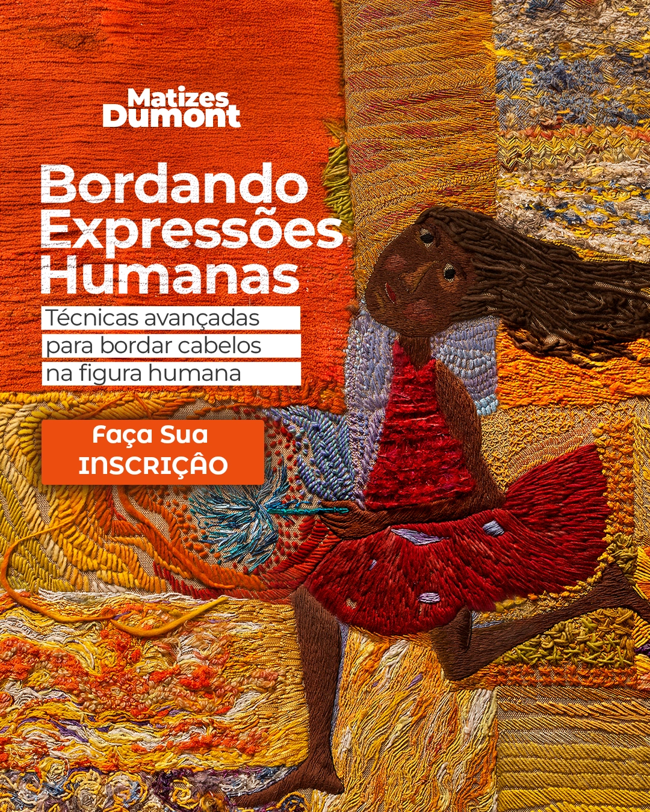
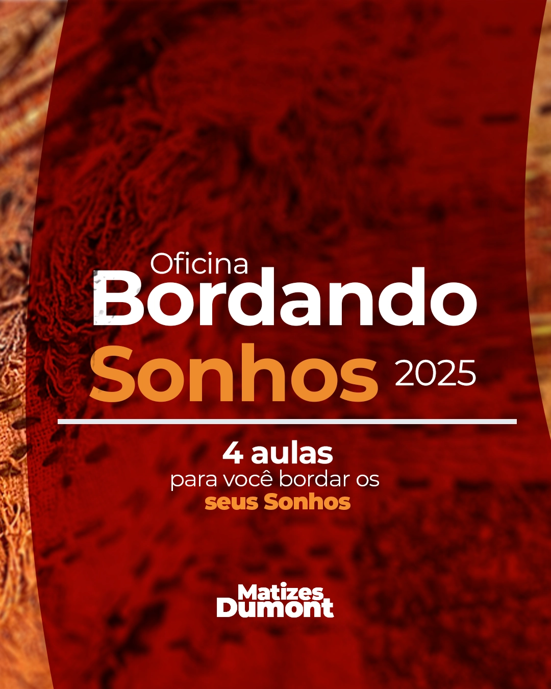
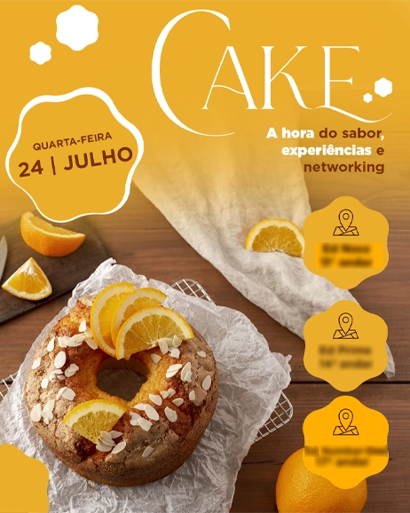
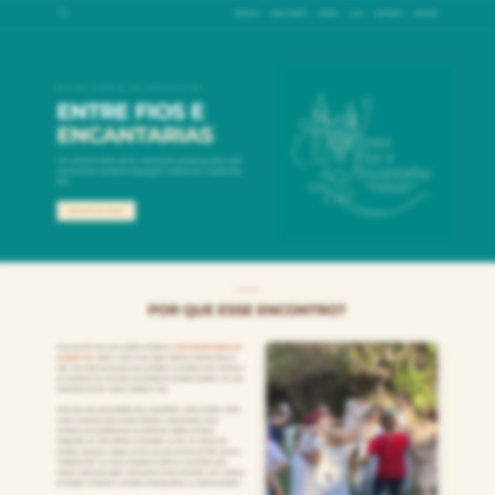
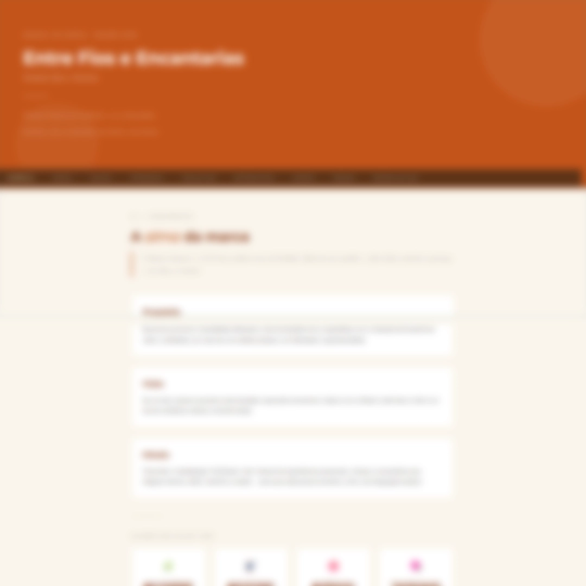
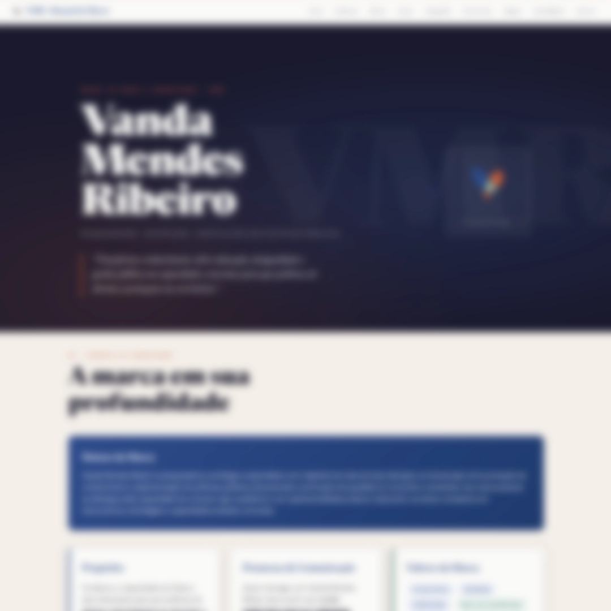

Leonardo
Carvalho
Quem sou
Designer, Social Media e Coordenador de Conteúdo com mais de 5 anos de experiência.
Formado em Teoria Crítica e História da Arte, comecei minha carreira com impressão FineArt e produção cultural antes de me apaixonar pela comunicação de marcas: da identidade visual ao planejamento editorial, da criação ao monitoramento. Entendo o que uma imagem precisa dizer antes de decidir como ela vai ser feita.
Atuo presencialmente em Brasília, ou online para o Brasil inteiro. Atendo marcas que valorizam conteúdo com repertório, consistência e resultado.
Tratamento de
Imagens

 Original
Editado
Original
Editado

 Original
Editado
Original
Editado

 Original
Editado
Original
Editado
Matizes
Dumont
O projeto: O Matizes Dumont é o coletivo de Bordado Livre formado pelas artistas da Família Dumont, referência no Brasil e no Mundo quando o assunto é bordado. Em setembro de 2022, assumi a comunicação digital completa: encontrei uma presença ativa mas focada quase exclusivamente em comercial, sem estratégia editorial definida.
O que fiz: Reposicionei a narrativa da marca para conteúdo de valor histórico e cultural, estruturei o calendário editorial e gerenciei simultaneamente 5 canais: Instagram, Facebook, YouTube, newsletter e site. Criei a identidade visual de 7 lançamentos, coordenei toda a produção de criativos e escrevi mais de 40 artigos e 150 e-mails, entre comunicação orgânica e campanhas de marketing.
Oficina Borde Folhas 2023

Oficina Da Tinta à Linha
Oficina Bordando sua História 2024

MiniCurso Aquarelando e Bordando Águas

Oficina Bordando Expressões Humanas

Oficina Bordando Sonhos

Oficina Borde Garças
Criativos &
Identidade

Estrutura &
Estratégia
Uso de inteligência artificial como camada de metodologia: não como substituição ao processo criativo, mas como acelerador de entrega com qualidade estratégica. Aplicado em criação de personas, copy, manuais de marca e estruturas de site.
Os entregáveis abaixo foram concebidos com IA e refinados editorialmente: do briefing do cliente à versão final publicável.

LandingPage "Entre Fios e Encantarias"

Manual Oficina "Entre Fios e Encantarias"
